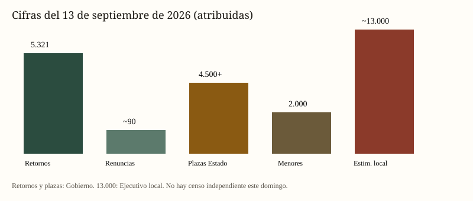

España · Migración · 13 de septiembre de 2026
Ceuta: el Gobierno cifra 5.321 retornos recientes; la ciudad habla de miles que siguen dentro.


A finales de julio de 2026 cruzaron de Marruecos a Ceuta decenas de miles de personas. La mayoría volvió en horas o pocos días. El 13 de septiembre el Ejecutivo informa de 5.321 retornos recientes. Ceuta sigue hablando de varios miles aún en la ciudad. No hay padrón independiente publicado este domingo que reconcilie flujo y stock.
En disputa: si había aviso suficiente del volumen y si Rabat orquestó la avalancha. Sánchez dice que no hay prueba sólida de autoría marroquí. La oposición y parte de Ceuta sostienen lo contrario. Eso es juicio político, no sentencia.
← Resumen del día · Todos los días
Fuentes y puntuaciones
| Medio | T | N | C |
|---|---|---|---|
| Reuters | 92 | 0 | 95 |
| El País | 88 | −15 | 90 |
| BBC | 90 | 0 | 95 |
| La Moncloa | 85 | +10 | 70 |